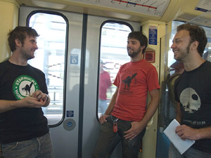

The long arm of RNC security reaches IWW at the MOA
Submitted on Sun, 09/07/2008 - 1:55pm

Today 8/31/08 at 1pm the Twin Cities IWW held at the Lake and Hiawatha
Light Rail Station in solidarity with Starbucks workers and to celebrate
getting our comrade Erik Foreman?s job back. The rally was a great success
with about 100 people showing up. At about 1:45 we all legally boarded the
light rail (using rail passes) and headed down to the Mall of America in order
to escort our fellow worker back to his first shift.
Everyone was peaceful and orderly on the train as we headed south. At
the Bloomington Station we were met by police who asked to speak with us regarding our plans. We informed the police that we did not wish to
cause any trouble, to protest inside of the mall, or to unlawfully assemble in
any way inside the mall. The police told us we should be fine and that we
would not have any trouble. We were then allowed to proceed to the MOA stop.
At the MOA the train was surrounded by police in full riot gear. They threatened to arrest us if we left the train. We were trapped inside
the train for about 20 minutes. The police even prohibited a woman with a
child who needed insulin from leaving the train, endangering the child's
health. After about 10 minutes and only after repeatedly insisting that we had
a
medical emergency did the police permit the woman and child to exit
the train. When asked why we were being detained a policeman said: "the
mall doesn't want you here." The officers? badge numbers were mostly covered
by their gear.
After about 20 minutes the police ordered the train back the way it
came and, with us stuck inside, we didn?t have much choice in the matter. As
far as I know, there were no arrests (thankfully) and everyone is safe.
This is clearly a violation of our rights as a union to public
picketing, our rights as citizens to lawful assembly, proof that the Minneapolis
and Bloomington cops are outright liars, proof that they protect and
defend corporate capitalism rather than the rights of citizens, and proof
once again that our organized power is the only "right" that we have.
Disclaimer - The opinions of the author do not necessarily match those of the IWW. TThis article is reposted in accordance to Fair Use guidelines.
The long arm of RNC security reaches IWW at the MOA
By David Seitz , TC Daily Planet - September 04, 2008
Members of the Twin Cities Industrial Workers of the World reported being detained by police on a Hiawatha Light Rail Train at the Mall of America after peacefully gathering Sunday to support re-instated co-worker who works at the mall.
The workers met at 1 p.m. at the 27th Ave. and Lake St. stop to celebrate with Erik Forman, a barista at a Mall of America Starbucks who successfully contested his termination, which he said was an illegal move to suppress his union activity. While there were many Minneapolis and Metro Transit Police present at the gathering, Forman and fellow IWW member Jake Bell said the group’s police liaison was able to make clear to police the peaceful nature of the gathering.
Following the rally, many boarded the train with Forman as he returned to work.
“I invited anybody who wanted to come to come with me to the Mall of America, to see the first union Starbucks in Minnesota and the first union shop in the mall, to buy a cup of coffee and to take a look around,” Forman said.
When the train reached the Bloomington Central Station, Bell said, Bloomington police gathered at the station pulled the liaison off the train.
“The police told him that we could go into the mall as long as we didn’t have signs,” Bell said. “And he made clear that no, we weren’t going to picket. The cop said that was cool, and we kept going.”
When the train reached the Mall of America stop, however, Bell and Forman say there was a line of Plymouth police in riot gear waiting for them. Bell said the police were accompanied by mall management.
“They said anyone who stepped out would be arrested,” Bell said. “They detained all of the people who were on the train, even who weren’t involved in the rally.”
After twenty minutes, the train continued its journey with all the mall-bound passengers still on board. When Forman and others who needed to report to work, and people who weren’t involved tried to negotiate, Forman said they were told they could walk to the Mall from the 28th Avenue station.
When contacted, a representative of the Plymouth Police said officers were working in conjunction with Bloomington Police. A representative of the Bloomington Police Department deferred to the Joint Information Center, which is managing law enforcement information across and between jurisdictions in the metropolitan area during the Republican National Convention
Sergeant Palmer of the Joint Information Center offered a different account. After participants in the IWW gathering got on the train, he said, law enforcement contacted mall management.
“The mall said, ‘we do not want these people here at the mall,’” said Palmer. “The train stopped before the Mall of America [at 28th Ave.] and these people were told, ‘this train is not going to the Mall of America, you can continue on foot.”
When asked about reports that the train did indeed continue to the mall, where passengers were then detained, Palmer replied, “I don’t know about that, because I wasn’t there, but that wasn’t what I was told.”
Mall of America spokesperson Dan Jasper said the group was asked to leave because it was in fact demonstrating.
“The Mall of America is private property,” Jasper said. “The group was treated fairly, equally and with dignity, and asked to leave the premises. We just don’t allow demonstrations.”
Asked about collaboration with law enforcement, Jasper said the mall “works in partnership with all local organizations.”
Forman said the group made clear that it planned no demonstration, and that this response from mall management and law enforcement was deeply troubling.
“We were very surprised,” Forman said. “We weren’t doing anything illegal. We weren’t there to protest. We were there to go to the mall, and in fact to do shopping like any other tourist. So it had to be political, and I’m fairly sure it’s illegal to ban someone from your property because of their political beliefs.”